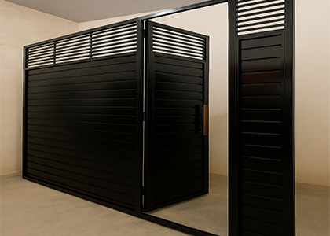

Serralheria Tecno Ferro
Serralheria Tecno Ferro - Natal/RN
Solidez, qualidade e precisão para seus projetos. Portões, grades, escadas, corrimãos e muito mais — sob medida e com acabamento perfeito.
Falar no WhatsApp 
Serviços Oferecidos
Portões residenciais e industriais
Fabricação e instalação com proteção e acabamento.
Grades de proteção e janelas
Soluções sob medida para segurança e estética.
Escadas comerciais e residenciais
Estrutura resistentes e desenho funcional.
Corrimãos e guarda-corpos
Acabamento seguro e ergonomia.
Manutenção, reformas e soldagem
Atendimento rápido para pequenos reparos e reformas.
Estruturas metálicas personalizadas
Projetos exclusivos conforme necessidade do cliente.
Galeria de Projetos